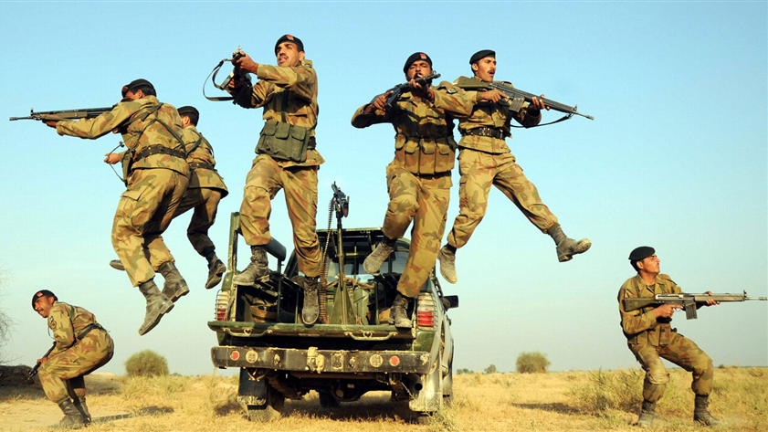

The Pakistan Army is the Pakistan Armed Forces' land service arm. Its present existence may be traced back to the British Indian Army, which ceased to exist during British Partition...
Iman, taqwa, and jihad fi sabilillah
Lt. Gen. Azhar Abbas is the Chief of General Staff.
TAI/AgustaWestland T129B ATAK, Bell AH-1Z Viper, Bell AH-1F Cobra, Mil Mi-35M Hind, NESCOM Burraq, CASC Rainbow: TAI/AgustaWestland T129B ATAK, Bell AH-1Z Viper, Bell AH-1F Cobra, Mil Mi-35M Hind, NESCOM Burraq, CASC Rainbow
Pakistan Armed Forces are a part of Pakistan's armed forces.
Land warfare is the role of this unit.
President Arif Alvi is the Commander-in-Chief.
The company was founded on August 14, 1947.
